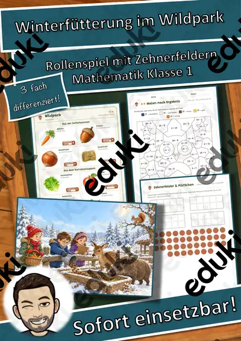

Der Obststand auf dem Adventsmarkt – Rollenspiel Rechnen mit Geld bis 20 €, Rückgeld, 3-fach differenziert (Klasse 1)
Mein Klassenzimmer wird zum Obststand auf dem Adventsmarkt! In diesem Rechen-Rollenspiel für Klasse 1 kaufen die Kinder Äpfel, Mandarinen, Nüsse und Saft, rechnen mit vollen Euro, finden Zehnerfreunde und zählen das Rückgeld von 10 € und 20 € – ganz ohne Computer oder Tablet.
Dreifach differenziert – alle Kinder spielen gemeinsam am Tisch und rechnen trotzdem auf ihrem Niveau:
- ★ 1 oder 2 Dinge bis 10 €, Reicht das Geld?
- ★★ 3 Dinge bis 20 €, Zehnerfreunde, fehlenden Preis finden
- ★★★ Rückgeld von 10 € und 20 € durch Ergänzen, mit wenig Geldstücken legen
Enthalten (25 Seiten + Deckblatt):
- Hinweise für Lehrkräfte mit Stundenablauf, Lehrplanbezug (LehrplanPLUS Bayern), Kopierplan und ausgefülltem Beispiel
- 3 Obsttafeln (★/★★/★★★) mit 8 illustrierten Waren
- Standschild, Rollenkarten (Einkaufskind · Obsthändlerin / Obsthändler · Kassenkind) und Satzstreifen für DaZ
- 3 Kassenzettel mit Ich-kann-Leiste und Partnerkontrolle
- 12 Auftragskarten
- Spielgeld zum Ausschneiden
- Knobel-Korb mit 9 Aufgaben für schnelle Rechner
- Ausmalbild für schnelle Rechner
- Malen nach Ergebnis in 3 Stufen (★ Euro-Aufgaben bis 10 € · ★★ Zehnerfreunde: drei Preise · ★★★ Rückgeld: Was fehlt?) – das Ergebnis verrät die Farbe, am Ende erscheint eine Mandarine
- Lösungen zur Selbstkontrolle (auch farbige Lösungsbilder zu Malen nach Ergebnis)
- Urkunde „Obststand-Rechenprofi“ farbig und zum Ausmalen
Viel Freude am Obststand wünscht Snice
FachMathematik
KlasseKl. 1
SchulformGrundschule
MaterialartArbeitsblätter, Stationenlernen, Mal- und Bastelvorlagen, Fördermaterial/Inklusion
Ähnliche Materialien

Die Bude am Weihnachtsmarkt – Rollenspiel Rechnen mit Geld, Euro und Cent, 3-fach differenziert (Klasse 2)

Am Kürbisstand – Rollenspiel Rechnen mit Geld bis 20 €, 3-fach differenziert (Klasse 1)

Rechnen im Winter-Café – Rollenspiel Rechnen mit Geld, 3-fach differenziert (Klasse 2–4)

Der Bratapfelstand – Rollenspiel Einmaleins mit Geld, Euro und Cent, 3-fach differenziert (Klasse 2)

Der Faschingsladen – Rollenspiel Kombinatorik und Rechnen mit Geld, 3-fach differenziert (Klasse 2)

Materialpaket Rechenwelten im Winter für die 1. Klasse: 5 Mathe-Rollenspiele, 3-fach differenziert (Adventsmarkt, Plätzchenbäckerei, Wildpark & mehr)

Winterfütterung im Wildpark – Rollenspiel Zahlen bis 20 zählen, zerlegen und ergänzen, 3-fach differenziert (Klasse 1)